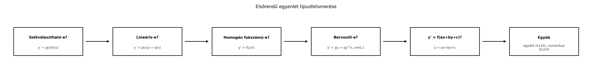

36.2 Helyettesítéssel megoldható
egyenletek: homogén és Bernoulli-típus
36.2.1 Motiváció
Az előző alfejezetben az egzakt egyenleteket és az integráló tényező
módszerét tanulta meg. Vannak azonban olyan elsőrendű egyenletek,
amelyek sem nem szétválaszthatók, sem nem lineárisak, sem nem egzaktak,
mégis megoldhatók egy alkalmas helyettesítéssel. Ilyen
helyettesítéssel a feladatot visszavezetjük egy már ismert típusra,
például szétválasztható vagy lineáris egyenletre.
Két gyakori példa: az
egyenletben a jobb oldal csak az
aránytól függ, ezért az
helyettesítés szétválaszthatóvá teszi. Az
egyenlet pedig nem lineáris, mert a jobb oldalon
áll, de az
helyettesítéssel lineáris egyenletté alakítható. Ebben az alfejezetben
ezeket a típusokat és a hozzájuk tartozó recepteket dolgozzuk ki.
36.2.2 Szemléletes kép
A típusfelismerés a differenciálegyenleteknél hasonló ahhoz, mint a
szerszámosládából a megfelelő szerszám kiválasztása. Az alábbi
folyamatábra azt mutatja, hogyan dönthetjük el, melyik módszert érdemes
alkalmazni:

Elsőrendű egyenlet típusfelismerése -
Ebben az alfejezetben tanult helyettesítéses típusok felismerésének
sorrendje a korábbi (szétválasztható, lineáris, egzakt) típusok
után.
Az ábra üzenete: először a legegyszerűbb típusokat ellenőrizzük, és
csak akkor lépünk tovább, ha azok nem működnek. A homogén
fokszámú, a Bernoulli- és az y’ = f(ax
+ by + c) alakú egyenletek mind helyettesítéssel
kezelhetők.
36.2.3 A homogén fokszámú
egyenlet
Definíció. Az
alakú elsőrendű differenciálegyenletet homogén fokszámú
egyenletnek (homogeneous equation) nevezzük, ha a jobb oldal
csak az
hányadostól függ.
Fontos megjegyzés. A „homogén” szó itt mást jelent,
mint a lineáris homogén egyenleteknél
().
A homogén fokszámú egyenlet jobb oldala általában nem lineáris.
Levezetés (derivation). Végezzük el az
helyettesítést. A szorzat deriválási szabálya szerint
Behelyettesítve az egyenletbe:
amiből
Ez
alakú, tehát szétválasztható: ha
,
a változókat szétválasztva
Ha
,
akkor az
,
azaz az
egyenes is megoldás (az
-val
való osztáskor ezt elveszíthetjük). A megoldás után visszahelyettesítjük
értékét.
Kidolgozott példa. Oldjuk meg az
egyenletet.
A jobb oldalt átírjuk:
tehát
.
Az
,
helyettesítéssel:
Rendezzük:
Szétválasztva:
Integráljuk mindkét oldalt:
Az első tag
,
a második
,
a jobb oldal
,
tehát:
Visszahelyettesítve
:
Ez a megoldás implicit alakban adott. Az ellenőrzéshez
implicit deriválással láthatjuk, hogy valóban kielégíti az eredeti
egyenletet.
36.2.4 A Bernoulli-egyenlet
Definíció. A
alakú egyenletet Bernoulli-egyenletnek (Bernoulli
equation) nevezzük. A
és
folytonos függvények. Az
eset lineáris, az
eset pedig szintén lineáris (szétválasztható), ezért ezeket nem soroljuk
a Bernoulli-típushoz.
Levezetés (derivation). A cél, hogy az egyenletet
lineárissá alakítsuk. Vezessük be az
helyettesítést. Deriváljuk
-t
a láncszabállyal:
Ebből
Most szorozzuk meg az eredeti egyenletet
-nel:
A bal oldal első tagja éppen
,
hiszen
;
a második tagban
.
Így az egyenlet:
Ez már lineáris
-ban,
tehát az integráló tényező módszerével megoldható. A megoldás után
adódik. Ha
,
az
is megoldás, amelyet a helyettesítés nem ad vissza (ott
nem értelmezett, ha
);
ezt külön fel kell tüntetni.
Kidolgozott példa. Oldjuk meg az
egyenletet.
Itt
,
,
,
tehát
.
Legyen
Deriváljuk:
,
tehát
.
Helyettesítsünk be az eredeti egyenletbe:
Fejezzük ki
-t
-val:
,
.
Ekkor:
Szorozzuk meg az egyenletet
-tel:
Ez lineáris egyenlet
-ban.
Az integráló tényező:
.
Szorozva:
A bal oldal
,
így:
Integrálunk:
A parciális integrálással:
,
tehát
Rendezzük:
Visszatérve
-ra:
,
tehát
valamint az
megoldás, amely a családban semmilyen
-vel
nem szerepel.
Ellenőrzés. Deriváljuk a megoldást:
Ekkor a bal oldal:
A jobb oldal:
,
tehát a két oldal egyenlő. A megoldás helyes.
36.2.5 Az y’ = f(ax + by + c) alakú
egyenlet
Levezetés (derivation). Ha az egyenlet jobb oldala
csak egy lineáris kifejezéstől,
-től
függ, akkor érdemes magát ezt a kifejezést új változónak választani.
Legyen
Ekkor
Ha
,
akkor
,
így az egyenlet:
Ez a jobb oldal csak
-tól
függ, tehát szétválasztható. Megoldás után
-ból
visszaszámoljuk
-t.
Homogén fokszámú esetben írd fel a jobb oldalt
alakban, majd vezess be
helyettesítést, írd fel
-t,
és oldd meg a kapott szétválasztható egyenletet.
Bernoulli-egyenlet esetén azonosítsd
-et,
-et
és
-et.
Ha
vagy
,
akkor lineáris egyenletről van szó. Ellenkező esetben vezess be
helyettesítést, alakítsd át az egyenletet lineárissá, majd oldd meg az
integráló tényező módszerével.
y’ = f(ax + by + c) esetén vezess be
helyettesítést, fejezd ki
-t
-vel,
oldd meg a kapott szétválasztható egyenletet, majd térj vissza
-ra.
Mindig ellenőrizz a megoldás deriválásával és az
eredeti egyenletbe való visszahelyettesítéssel.
A típusfelismerés folyamatábrája a ### Szemléletes kép
részben található.
36.2.7 Valós életbeli
alkalmazás
Légellenállásos mozgás négyzetes taggal
(Bernoulli-egyenlet).
Egy kerékpáros vízszintes úton, hajtás nélkül lassul. A domináns
ellenállási erő a sebesség négyzetével arányos:
.
Newton második törvénye:
Ez Bernoulli-egyenlet
,
,
esetén. Legyen
.
Ekkor
.
Az egyenletet átrendezve:
azaz
Ez
-ban
lineáris, sőt konstans jobb oldalú. Integrálva:
Ha a kezdeti sebesség
,
akkor
,
tehát
.
Így
és mivel
,
Számszerű példa. Legyen
,
(szemléltető modellérték, ellenőrzést igényelne),
.
Ekkor
.
A sebesség:
Például
-nál:
.
Értelmezés. A négyzetes közegellenállás miatt a
sebesség hiperbolikusan csökken, nem pedig
exponenciálisan, mint lineáris ellenállásnál. A modell korlátja: kis
sebességeknél a lineáris (viszkózus) tag is szerepet kap, így a tisztán
-es
modell ott pontatlan.
Üldözési görbe (homogén fokszámú egyenlet).
Egy hajó a folyó túlpartján lévő
kikötő felé kormányoz: saját sebessége
,
mindig az
felé mutat, a víz pedig állandó
sebességgel sodorja a
irányban. Az
-ból
mért
koordinátákban
()
a sebességvektor
,
,
ezért
A jobb oldal csak az
aránytól függ, tehát az egyenlet homogén fokszámú, és a
fenti
helyettesítéssel szétválasztható:
.
Hasonló módszer a navigációban és a robotikában is használatos.
36.2.8 Tipikus hibák
A „homogén” szó félreértése. A homogén fokszámú
egyenlet
()
nem keverendő össze a lineáris homogén egyenlettel
().
A homogén fokszámú egyenletben a jobb oldal általában nemlineáris.
A Bernoulli-helyettesítés deriváltjának
elszámolása. Az
deriváltja
,
nem pedig
.
A lineáris egyenlet felírásakor a
szorzótényezőt mindvégig meg kell tartani.
Az y’ = f(ax + by + c) esetben
figyelmen kívül hagyása. Ha
,
akkor az egyenlet
alakú, ami már eleve szétválasztható, nem kell
helyettesítés. A helyettesítési képlet
csak
esetén érvényes.
A konstans előjelének elvesztése a szétválasztható
egyenleteknél. A
integrálásakor a konstans
helyett
használata segíthet az abszolút értékek egyszerűsítésében, de a végén
ellenőrizni kell, hogy a megoldás minden ágon értelmes.
36.2.9 Önellenőrzés
Igaz-e, hogy az
egyenlet homogén fokszámú? Mi a megfelelő
?
Írd fel a Bernoulli-egyenletet az
helyettesítéssel a
egyenletre: milyen lineáris egyenletet kapunk
-ra?
Milyen helyettesítést használsz az
egyenletre? Írd fel az
-ra
kapott egyenletet.
Mi történik a Bernoulli-egyenletben, ha
?
Milyen típusúvá válik az egyenlet?
Az
egyenlet Bernoulli-típusú-e? Ha igen, add meg
-et,
-et
és
-et.
36.2.10 Feladatok
1. feladat (A). Oldd meg az
homogén fokszámú egyenletet.
2. feladat (A). Oldd meg a
Bernoulli-egyenletet.
3. feladat (B). Oldd meg az
egyenletet (a) mint lineáris egyenletet, (b) mint homogén fokszámú
egyenletet. Hasonlítsd össze a két módszert.
4. feladat (B). Oldd meg az
egyenletet az
helyettesítéssel.
5. feladat (C). Bizonyítsd be, hogy ha az
homogén fokszámú egyenletben
,
akkor a megoldások mind
alakú egyenesek.
6. feladat (D). (Légellenállásos mozgás,
Bernoulli-modell) Egy test vízszintes pályán mozog, a közegellenállás
.
A tömeg
,
,
kezdeti sebesség
.
Oldd meg a
egyenletet, add meg
-t,
és számítsd ki a sebességet
múlva. Értelmezd, miért csökken a sebesség hiperbolikusan.
36.2.11 Megoldások
36.2.11.1 Önellenőrzés –
válaszok
Igen,
.
,
,
az egyenletből
.
,
,
tehát
,
és az egyenlet
.
esetén
,
azaz
,
ami lineáris (szétválasztható) egyenlet.
Igen,
,
,
.
36.2.11.2 1. feladat
A jobb oldal:
,
tehát
.
Az
,
helyettesítéssel:
Rendezve:
Szétválasztva:
Integrálva:
Ez
.
Visszahelyettesítve
:
36.2.11.3 2. feladat
,
,
.
Legyen
,
.
Az egyenletből
.
Behelyettesítve:
.
,
,
így:
Szorozva
-tel:
.
Ez lineáris, integráló tényező
,
így
.
Integrálás:
,
tehát
.
Visszatérve:
.
Ezenkívül az
is megoldás.
36.2.11.4 3. feladat
Az egyenlet
,
lineáris. Integráló tényező
.
Szorozva:
.
Integrálva:
,
tehát
.
Homogénként:
,
.
Ekkor
,
tehát
,
,
,
.
A két eredmény azonos.
36.2.11.5 4. feladat
,
,
.
Az egyenlet:
,
azaz
.
Szétválasztva:
.
Az integrál elemi, parciális törtekkel számolható
(,
):
Az implicit általános megoldás: ez az érték
,
ahol
.
Emellett az
gyöke miatt az
egyenes is megoldás (az osztásnál elveszett).
36.2.11.6 5. feladat
Ha
,
akkor az
helyettesítés után
,
tehát
.
Mivel
,
,
azaz
konstans:
.
Így
,
.
Ezek egyenesek.
36.2.11.7 6. feladat
A Bernoulli-egyenlet:
,
,
,
.
,
.
Az egyenletből
,
tehát
.
Integrálva:
,
.
A megoldás:
Itt
,
és
,
tehát
A
is megoldás (a helyettesítésnél elveszett), de a
kezdeti feltétel ezt kizárja.
s:
.
A sebesség hiperbolikusan csökken, mert a fékező erő a sebesség
négyzetével arányos, ami nagyobb sebességnél erősebb lassulást okoz,
kisebbnél viszont gyengébbet – így a görbe nem exponenciális, hanem
alakú.
36.2.12 Rövid összefoglaló
Ebben az alfejezetben három, helyettesítéssel megoldható elsőrendű
egyenlettípust tárgyaltunk. A homogén fokszámú egyenlet
alakú; az
helyettesítéssel szétválaszthatóvá válik, mert
.
A Bernoulli-egyenlet
();
az
helyettesítéssel lineáris egyenletre vezet:
Az y’ = f(ax + by + c) alakú egyenlet az
helyettesítéssel szétválaszthatóvá válik. A típusfelismerés
folyamatábrája a ### Szemléletes kép részben látható. A
típusfelismerési stratégia továbbvitt eredmény: az Elsőrendű modellek: logisztikus növekedés, keverés,
RC-kör alfejezetben és a Vegyes vizsgafeladatsor
II.: többváltozós, komplex analízis és differenciálegyenletek
alfejezetben is használjuk. A Bernoulli-módszerrel oldottuk meg a
négyzetes légellenállásos mozgást, a homogén módszer pedig a rögzített
célpont felé tartó, sodrásnak kitett hajó pályájának egyenletét oldja
meg.
36.2.13 Források és ellenőrzési
hiányok
A klasszikus helyettesítéses módszerek (homogén, Bernoulli) stabil,
tankönyvi anyagok; konkrét forrást nem idéztem. A számpéldákban szereplő
fizikai paraméterek
(,
)
szemléltető modellértékek, nem ellenőrzött mérési adatok.